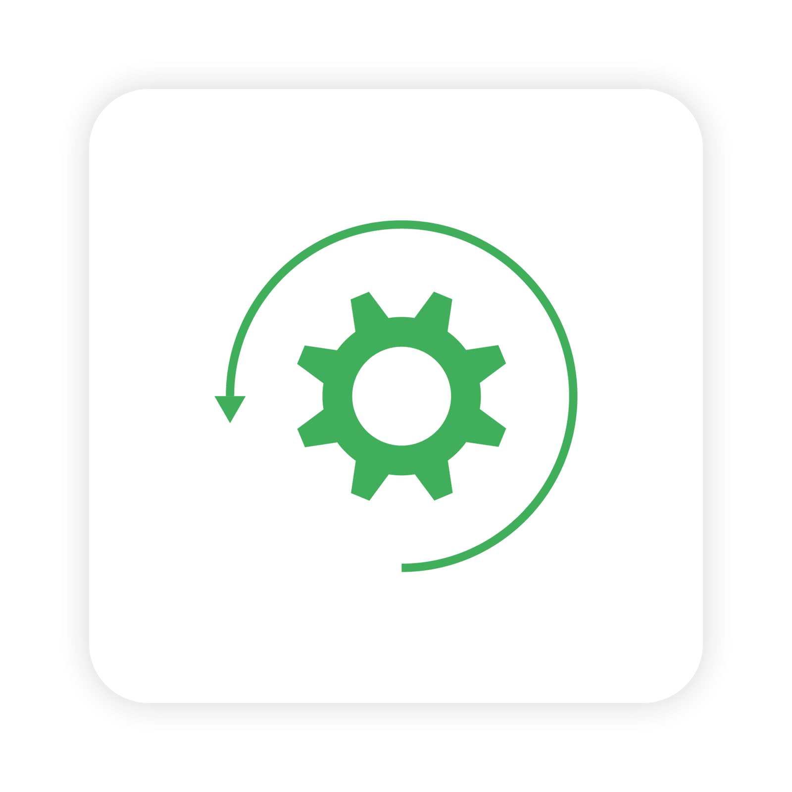
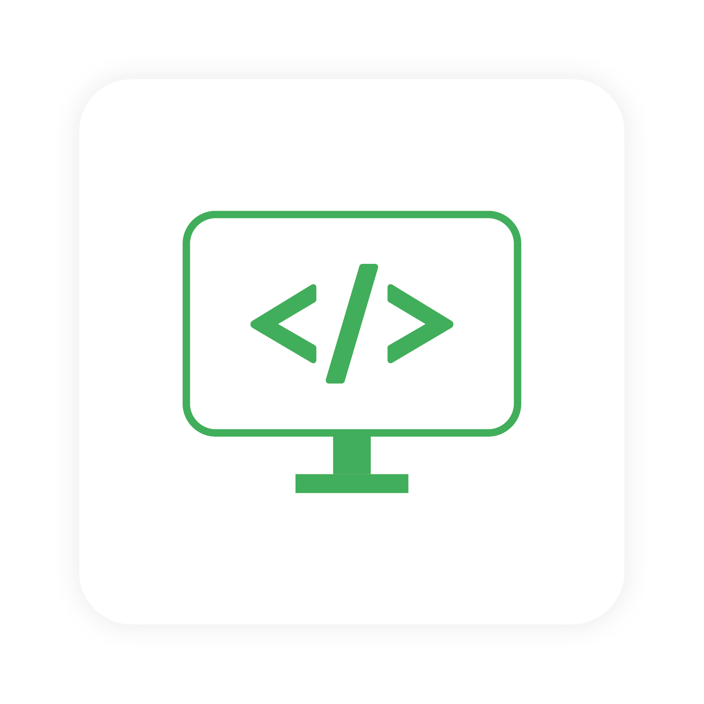

Rewolucja przemysłowa mająca na celu stworzenie inteligentnej fabryki, w której ludzie i maszyny integrują się i uzupełniają. Procesy są kontrolowane od wpłynięcia zamówienia do wydania do klienta. Wymiana danych między sterownikami i pracownikami odbywa się przez sieć równolegle do trwającej produkcji. Zwiększa to wydajność produkcyjną i pozwala zaoszczędzić czas i materiały. Możliwość zdalnej kontroli przedsiębiorstwa w czasie rzeczywistym.
Oferta
Automatyzacja procesów produkcyjnych
Robotyzacja
Industry 4.0
Dokumentacja
Kompleksowe linie do paletyzacji, spawania, przenoszenia itp.
Projekt i budowa chwytaków do robotów
System transportu wewnętrznego
Wizualizacja procesów - SCADA
Rozwiązania usprawniające produkcję
Projektowanie i budowa maszyn
Kompleksowość
Pomysł
Szukasz firmy, która realizuje Twój pomysł?
Od pomysłu zaczynają się wielkie rzeczy, porozmawiajmy o nim.

Wykonanie
Wykonujemy wszystkie niestandardowe elementy na najnowocześniejszych maszynach CNC jak: laser, prasa krawędziowa, frazarki i tokarki. Następnie je spawamy i lakierujemy.
Analiza
Każdy projekt zaczynamy od dogłębnej analizy. Stawiamy przed sobą możliwe problemów i je rozwiązujemy. Poszukujemy rozwiązań doskonałych i niezawodnych.

Programowanie
Zespół programistów ożywia mechanizmy wcześniej wykonane. Linie technologiczne programujemy online i offline.
Projekt
Przy projektowaniu skupiamy się na produktach znanych i cenionych firm w branży. Projekt 3D pozwala uniknąć kolizji maszyn współpracujących oraz na analizę wytrzymałościową komponentów.
Uruchomienie
Ekipa montażowa uruchamia całą linię czy maszynę u klienta. Po montażu, szkoli pracowników z obsługi urządzenia.